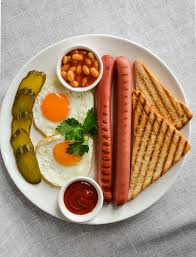
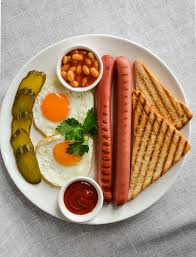

Especial café da manhã - Panelinha
2021.06.21 21:33

Quer sair mesmo?
Cancelar Sim Entrar Favoritas Receitas Escola Loja Cozinha Prática Vídeos Blogs Siga o PanelinhaSiga a Rita Lobo
Receitas Escola Loja Cozinha Prática Vídeos Blogs Buscar | Entrar Busca avançada Limpar filtros
Especial café da manhã
Tudo para você caprichar na primeira refeição do dia! Veja nossas ideias
Tem só 15 minutinhos?
Dá tempo de preparar tudo isso aqui ó:
básico e bom
Café coado
bella, ciao!
Café Moka (cafeteira italiana)
très chic
Café de prensa
geladinho
Frapê de café
Pera cozida no microondas com mel e canela
Tartine de queijo grelhado com pera cozida
Queijo minas grelhado
Granola de frigideira
menos é mais, sabe?
Salada de duas frutas
direto da roça
Cuscuz de milho com ovo pochê
vale como fruta
Pasta de abacate
perfumado
Chá marroquino de hortelã
tem queijo!
Omelete a jato
chiquérrimo
Ovo quente
no liquidificador
Creme de abacate levinho
bem quentinho
Maçã assada com especiarias no micro-ondas
Meia hora: sucesso total!
Tempo de sobra para um café completo
cremoso mesmo!
Ovo mexido cremoso
garante a fruta
Panqueca de banana
encorpado
Chocolate quente
pronta na pressão
Mandioca com manteiga de mel e castanha-de-caju
tostadinho
Sanduíche de banana com ricota e mel
é o abacabacon!
Sanduíche de abacate, bacon e ovo
facílimo (mesmo!)
Bolo de milho de caneca
douradinho
Queijo quente com crosta de parmesão
Curtindo o fim de semana
Esqueça a correria e capriche na receita
trem bão
Pão de queijo
chegou visita?
Chipa da Dona Arlete
pode rechear!
Broinha de fubá
um luxo
Muffins integrais com queijo e espinafre
da vovó
Bolo de cenoura com cobertura de chocolate
dá para congelar
Bolo de Fubá
de colherada
Bolo de pamonha
sirva com manteiga!
Bolo de banana com aveia
tem pré-preparo
Tapioca cor-de-rosa com queijo meia cura
bela combinação
Cuscuz de tapioca com manga grelhada
perfumada
Rabanada de pão de fôrma com raspas de laranja
elegante
Biscoito de vinho
Vale cada minuto
Prepare agora e garanta o café da manhã da semana toda
para chamar de sua
Manteiga caseira
cremosão!
Requeijão caseiro
só dois ingredientes
Iogurte caseiro
é sem açúcar
Geleia caseira de damasco
vai bem com tudo!
Geleia de morango
vira torrada, rabanada
Pão de fôrma caseiro
deu preguiça?
Pão italiano sem sova
hit das manhãs
Pão Australiano
levanta o astral!
Muesli fresco
Compre o que você precisa
Loja Panelinha
Café
Prensas fracesas, cafeteiras italianas e mais
Louças
Cumbucas, xícaras e tudo o que você precisa
Siga o PanelinhaSiga a Rita Lobo
Editora Panelinha Ltda. © 2000
- 13 dicas para um café da manhã nutritivo - Caldo Bom
- Receitas de café da manhã: 7 opções para sair da rotina .
- 10 receitas de café da manhã saudável em até 5 minutos .
- Especial café da manhã - Panelinha
- Receita de Panqueca americana | CyberCook
- 8 sugestões para um café da manhã saudável, delicioso e .
- → 20 melhores RECEITAS PARA O CAFÉ DA MANHÃ .
- 11 receitas para o café da manhã para começar o dia bem
- 15 ideias de café da manhã para começar o dia bem
- 32 receitas que vão te ajudar a preparar um café da manhã .
- 13 dicas para um café da manhã nutritivo - Caldo Bom
- Receitas de café da manhã: 7 opções para sair da rotina .
- 10 receitas de café da manhã saudável em até 5 minutos .
- Especial café da manhã - Panelinha
- Receita de Panqueca americana | CyberCook
- 8 sugestões para um café da manhã saudável, delicioso e .
- → 20 melhores RECEITAS PARA O CAFÉ DA MANHÃ .
- 11 receitas para o café da manhã para começar o dia bem
- 15 ideias de café da manhã para começar o dia bem
10 saudável em até 5 minutos · 1. Bolo de chocolate com 3 ingredientes · 2 . - 32 receitas que vão te ajudar a preparar um café da manhã .
10 saudável em até 5 minutos · 1. Bolo de chocolate com 3 ingredientes · 2 .
 
